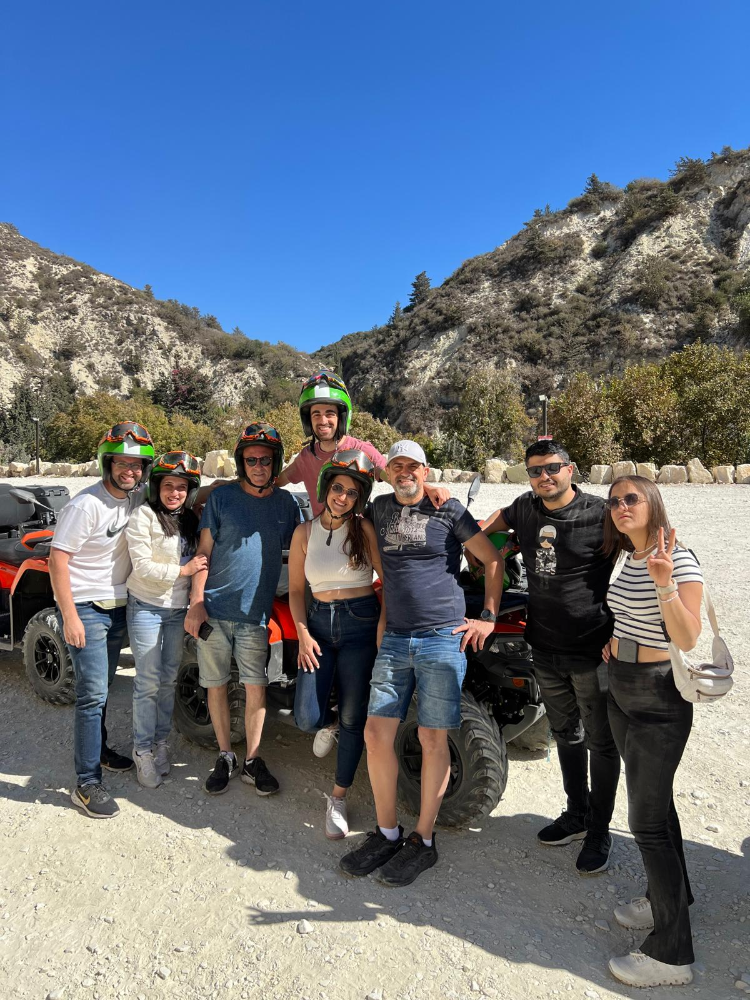
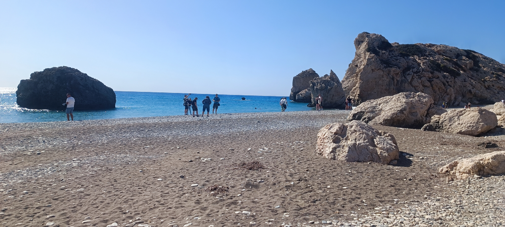
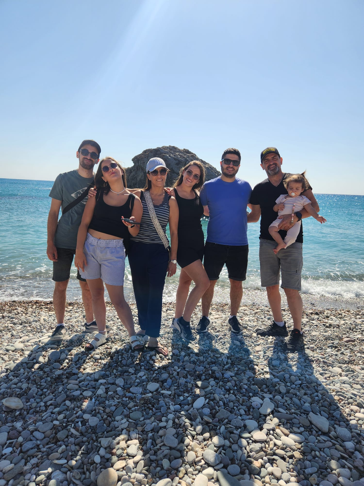
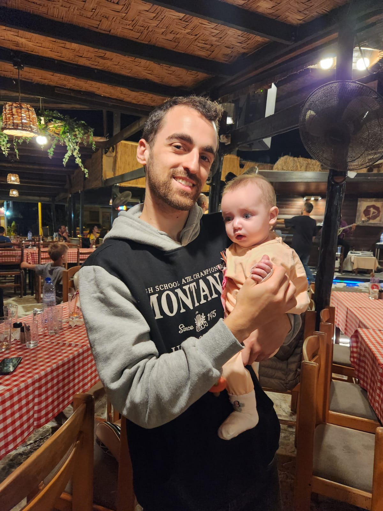
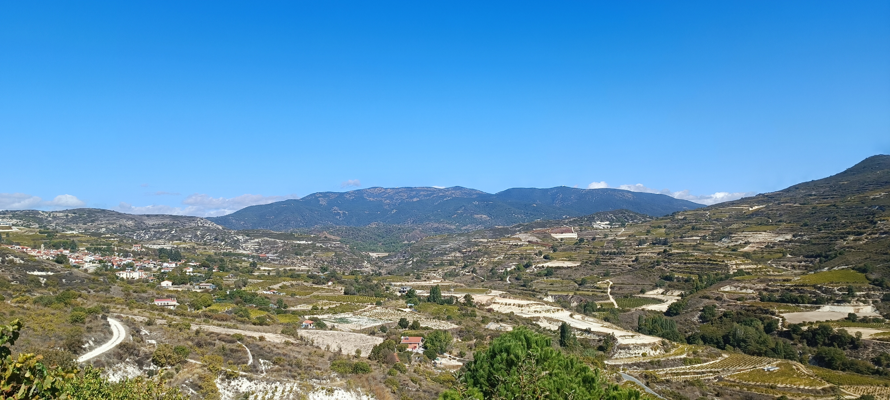
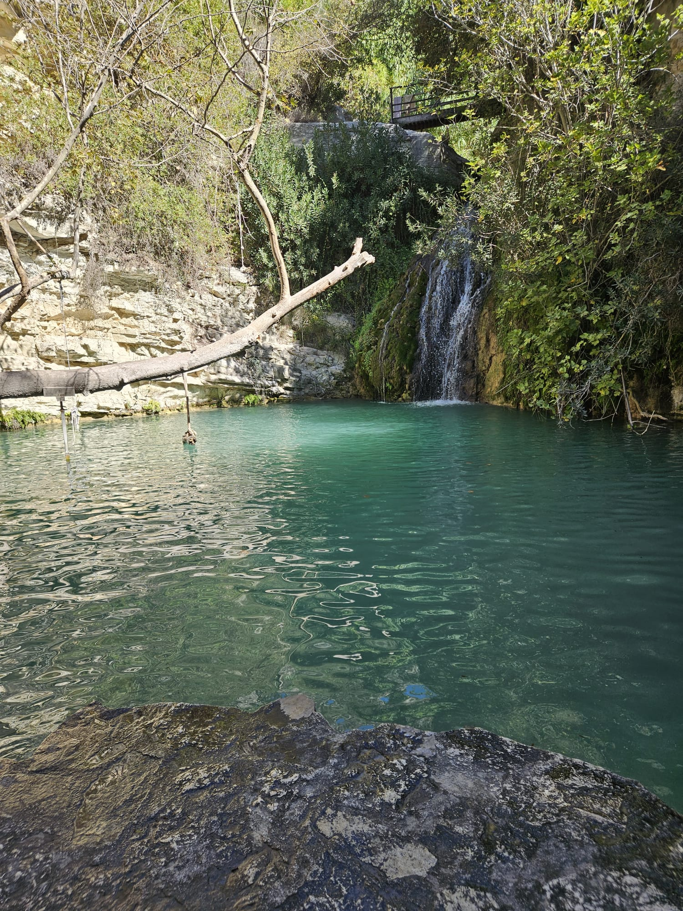

Paphos
It seems that almost every year, in Sukkot, my family travels abroad. But this was a special one because my sister brought for the first time her daughter, and my cousin brought her kids as well. And so, the whole gang was here. My parents, My sisters with my brother in law and their daughter, My aunt with her husband, My cousin with her husband and kids, and most importantly, me. We rented two apartments in this glorious complex with pools, spa and restaurants nearby. It was fun to travel with the little kids but after Iceland, which was a quiet trip focused on hikes and nature, this trip was loud, messy and focused on shopping and kids. I can't complain though and I am grateful my parents insist to travel abroad every year.
Picturesque Moments






Favourite attractions:
-
Demokritos
The greek culture is one of my favourites. They are happy, they know how to dance and they have amazing food. There are tavernas everywhere and Demokritos is one of the best. The place has dancers and singers all night long, great food, great alcohol (try the Raki) and it's just so much fun. (This blog is not sponsored I promise).
-
The Promenade
The promenade is great. Great view to The Mediterranean Sea, great restaurants (even some kosher ones!) and I saw this guy with a telescope and he let me watch Saturn with him so that was awesome. You can take a boat or go for a swim in the great beaches of cyprus. There's even a place you can see a rock emerging from the sea that looks like Sid the Sloth from Ice Age!
-
Adonis Baths Waterfalls
The legend says Aphrodite, the goddess of beauty and love, emerged from the sea in paphos. She then married Adonis, king of cyprus, who became god of fertility. This waterfalls are attributed to him and on the way to them you will see many of his and aphrodite's statues. There's even a statue that says if you touch Adonis' private parts, you will be fertile. Other than that weird part, the waterfalls are great and you can jump to a freezing pool from a tree that hangs above. Overall, great adventure even though it's bit far from the city center.
-
Kings Avenue Mall
Iv'e told you it was more of a shopping type of trip. I'm not a shopping type-of-guy but travels exclusively for malls so we had to get there. The mall is cute, it has Jumbo and some outlet stores. Iv'e bought some funny socks so I consider it a success. Of course, it's cheaper than Israel. Also, there's some markets in the city and the Old City Market is a good one if you want some souveneirs.
Travel Tips:
- Driving: Although in Greece they drive on the right side of the road (as you should), in cyprus they drive on the left side on the road for some reason so pay attention! If you want to rent a car or when you just cross a road, you need to pay attention where your'e looking.
- Gyros:Gyros is the greek shwarma. As an Israeli, I love shawarma so imagine my love to gyros that has toppings like red onion and sumac. You have to get it, it's served in every restaurant and it's absolutley the perfect dish.
- ATV Adventure: Go out from the city, take an Atv, drive to the mountains, get in a greek gods museum and jump from a waterfall. This is not a threat. It's a great adventure and it was so much fun. Even though the water was freezing, me and my sisters jumped in and it's one of my best memories in recent years.
- Get a resort: Depend on the type of trip want but resort is a great option in paphos. There aren't that many good restaurants around and the hotels in the city centre are very expensive so an all inclusive or even half pension resort just outside the city is viable and cheaper option with great pool and maybe spa.
- Beware of scammy restaurants: When you walk on the street, you can see waiters standing outside a restaurant inviting peoplle inside. This places are usually the most expensive restaurants in the area and the food is not even that good! It's a tourist trap and a scam. This types of restaurants are all over europe so beware and go the restaurants in the back alleys without the rude waiters outside.